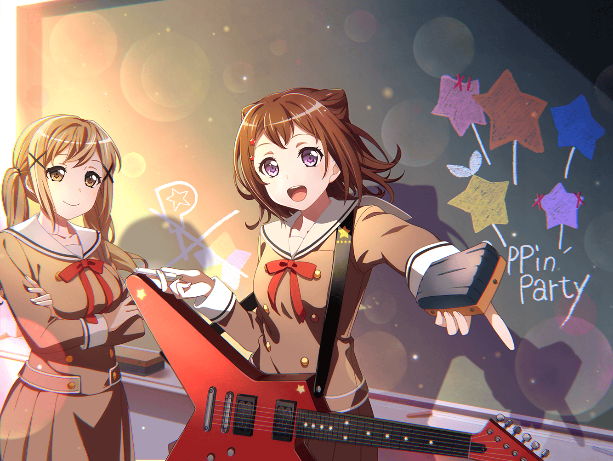

香澄
ねっ、ねっ！
いいこと考えたから聞いて♪
有咲
却下な
香澄
まだ何も言ってないよ～！
有咲
どうせろくでもないことだろ？
顔見れば分かる
たえ
有咲すごい……熟年夫婦みたい
香澄
私も有咲の考えてることわかるよっ！
有咲
わかんなくていいから！
香澄
有咲と私が夫婦なら、おたえはなにかなぁ～
たえ
私、隣の家に住む人やるね
有咲
ママゴトかよ！
つか、何か思いついたことあるんだろ？
香澄
あっ、そうそう！
よくぞ聞いてくれましたー♪
有咲
あー。
聞かなきゃよかった
香澄
あのね！
私たちで、お菓子を作りたいなーって思ったんだ♪
有咲
お菓子？
有咲
いきなりだな。香澄、お菓子なんて作ったことあんの？
香澄
あるよ！
香澄
商店街のお祭りの時に、ポピパキャンディー作った！
たえ
ポピパキャンディーは美味しかった
有咲
まぁ……お菓子っちゃあお菓子だけど……
香澄
キャンディーはお菓子だよ！
またみんなで作ろうよ～
有咲
キャンディー作るのか。作ってどうするんだ？
香澄
ライブに来てくれた人に配る！
たえ
それいい
有咲
よくないっ！
香澄
えっ！？ だめ？
有咲
だめに決まってんだろっ！
香澄
えぇ～なんでだめなのー？
いい考えだと思ったのにー
たえ
私も、いいなって思ったけど……
だめなの？
有咲
あのなー、そうやって香澄を野放しにするから、
厄介ごとに巻き込まれるんだぞ
有咲
甘やかしすぎだっての
有咲
商店街の件だって
もとはといえば香澄の思いつきが原因なんだからな
香澄
そうだったっけ？
たえ
そうだったかも？
香澄
そうなのかも！？
有咲
お前らな……
有咲
だいたいなー、衛生面の問題もあるし、
費用だってばかにならないだろ。
そーいうことを一から考えないと計画倒れになるぞ
香澄
んー、ふふっ
有咲
気持ちわる！ いきなりどーした！？
香澄
有咲怒ってるけど、
やっぱり真面目に考えてくれてるんだなーって
たえ
香澄の思いつきに、全力で応えてる
有咲
ちがっ、これは……って、……うぅ
香澄
照れてる？ 有咲照れてる？
たえ
かわいい
有咲
うるせー！
茶化すなら協力しねーからな？
香澄
ごめんなさーい♪
たえ
香澄の思いつきで苦労することも、ある
たえ
でも、いやじゃない。
自然と私たちを動かしてくれるから
香澄
おたえ、いいこと言う！
有咲
それを自分で言ったらおしまいだからな
香澄
はーい！
気をつけまーす♪